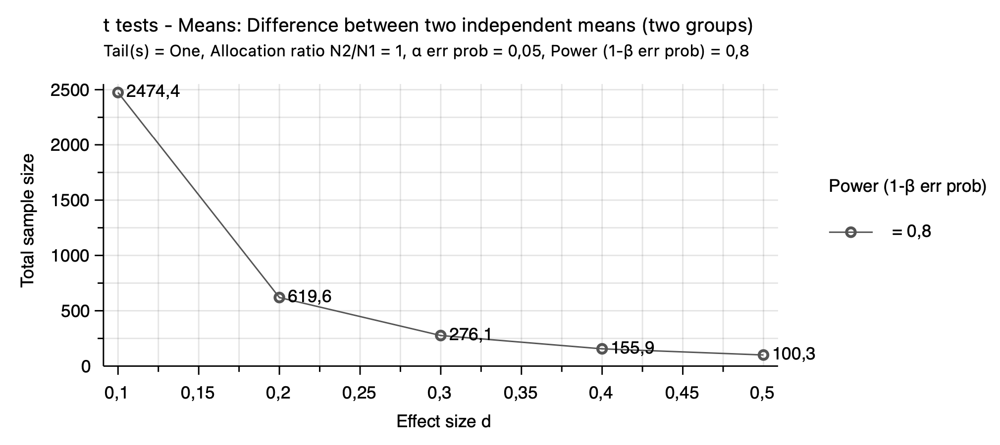
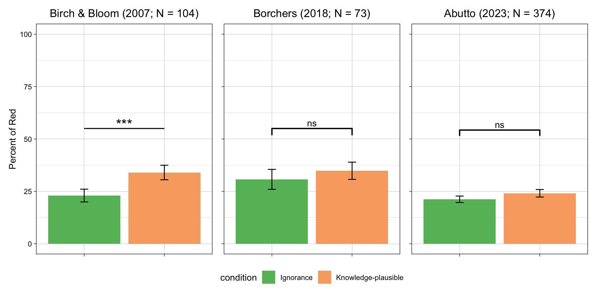
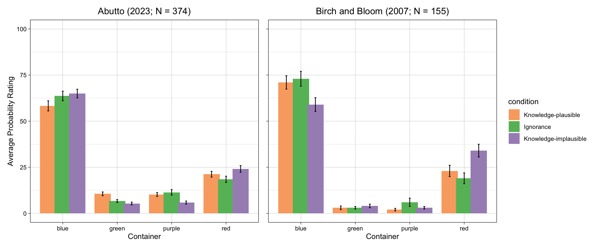
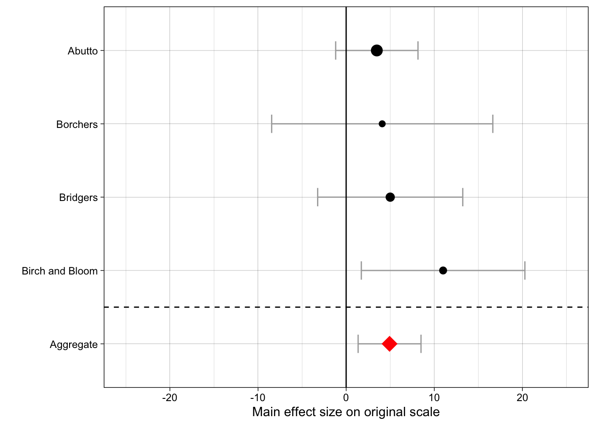
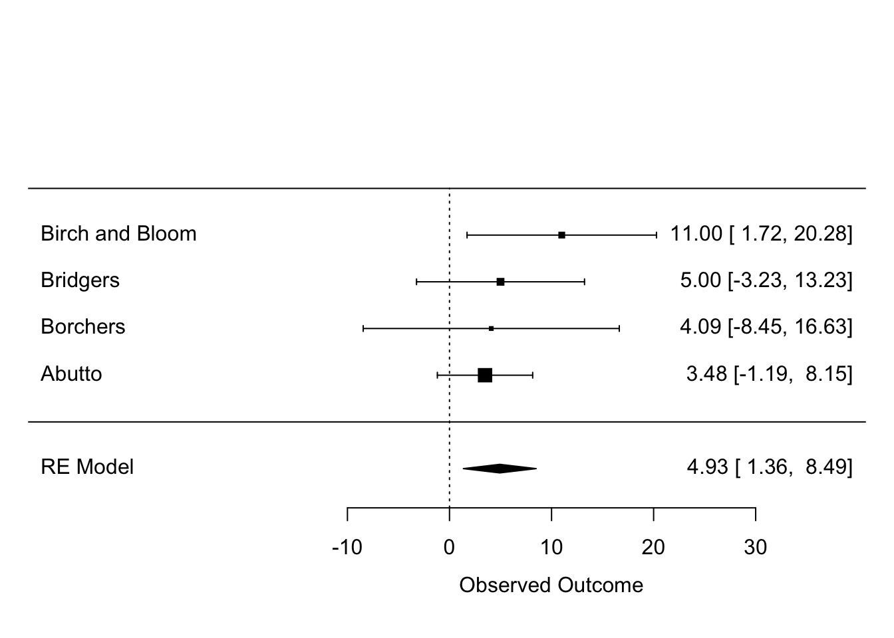
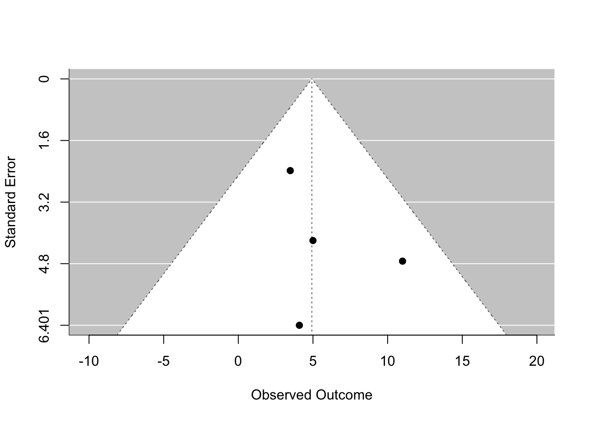

Replication of study ‘The curse of knowledge in reasoning about false beliefs’ by Susan A. J. Birch and Paul Bloom (2007, Psychological Science)
Author
Adani B. Abutto (Email: aabutto@stanford.edu)
Published
December 12, 2023
Introduction
Ample psychological literature has investigated and discussed the onset and development of human reasoning about others’ beliefs and knowledge states. Various scholars and findings have suggested that young children struggle considerably with false-belief reasoning, that is, reasoning about others’ beliefs in cases where those beliefs conflict with reality. Birch and Bloom’s (2007) seminal study examined whether adults’ struggles in “false-belief reasoning” are akin to children’s when sufficiently sensitive measures are used. Indeed, their results indicated that young adults’ (N = 155 college students) reasoning about another person’s (false) belief about the world can be compromised by manipulating their knowledge about an event’s outcome as well as the plausibility of the event in question. In sum, this finding suggested that while children may have difficulties ignoring their knowledge when reasoning from the perspective of an unknowing agent, adults may experience their knowledge interfering with their false-belief reasoning ability in similar ways.
Figure 1.
Figure taken from Birch and Bloom (2007); questionnaire item prompting participants to respond by indicating probabilities between 0 and 100. Color-word labels (red, green, purple, blue) are included in the figure for interpretability and were not shown to participants in the study.
Birch and Bloom’s experimental study employed a simple four-step procedure, using a modified version of a classic displacement task (see, e.g., Wimmer & Perner, 1983). Figure 1 shows the task as presented to participants in one of the three experimental conditions. The procedure was highly similar across conditions: In the first step, all participants were shown a picture of a girl, Vicki, holding a violin in a living room with a sofa and four containers of different colors. Participants were then told that once Vicki finished playing, she placed her violin in a blue container and goes outside playing. Thereafter, participants were shown a text and picture conveying that Vicki’s sister, Denise, came in, moved the violin, and rearranged the colored containers. To this end, participants were shown another short text, this time varying by experimental condition: “While Vicki is outside playing, her sister, Denise moves the violin to […]”
Ignorance condition: “[…] another container.” (no knowledge of outcome; no interference with false-belief reasoning)
Knowledge-plausible condition: “[…] the red container.” (knowledge of placement in same location but different container; interference with false-belief reasoning)
Knowledge-implausible condition: “[…] the purple container.” (knowledge of placement in different location and different container; no (or less) interference with false-belief reasoning)
Then, upon conclusion of the story, participants were asked to respond to a single question: “When Vicki returns, she wants to play her violin. What are the chances Vicki will first look for her violin in each of the [colored] containers?” Respondents were asked to give their answers in percentages by filling out four separate response fields (i.e., one for each of the four containers).
Given that the study involved only simple text and picture material as well as a single-page questionnaire, I do not anticipate any major challenges in the reproduction and use of study materials. I expect that all experimental manipulations, respondent instructions, and measures can be administered without issue by using Qualtrics’ in-built survey functions. Notably, however, it seems that Birch and Bloom (2007) administered their questionnaire in physical form. It is possible that when using the Qualtrics platform, it is not achievable to display the figure text and probability response fields in the exact same layout as in the original study (e.g., field size and location).
However, this slight limitation in replicating the study materials should not impact the overall replication quality in fundamental ways. Indeed, in light of the COVID-19 pandemic, numerous researchers have started creating and employing digital versions of classic “theory of mind” (ToM) tasks that have typically been administered in person. The findings of such online studies (e.g., in terms of task success rates by age bracket) are generally comparable to the findings of the corresponding in-person research (see Livingston et al., 2021, for an example).
There are three notable differences between the original study (Birch & Bloom, 2007) and the first replication study by Borchers (2018, see https://rpubs.com/lrborchers/450894). The first lies in the replication study omitting one of the three experimental conditions (knowledge-implausible). Borchers justifies this in pointing out that the authors did not report significant differences between the knowledge-plausible group and the ignorance group. However, given that Birch and Bloom (2007) did report a lack of a difference between the ignorance and knowledge-implausible groups as one of two key findings — indicating that knowledge alone does not appear to be the sole factor biasing adults’ false-belief reasoning —, I plan to diverge from Borchers’ approach and include this condition in the present study.
Second, the sample of the original study consisted of undergraduate students at Yale, whereas Borchers’ sample consisted of MTurk workers. Borchers did ask respondents to indicate their education levels but remarked that given this circumstance, there would likely be a difference in education between the original group and the MTurk sample.
Third, Borchers’ study was conducted online rather than in person, which meant that stimuli had to be adapted and were not perfectly equivalent to the original materials. It should also be noted that Borchers asked participants whether they were colorblind and excluded people in this category — Birch and Bloom did not report whether they did so.
Finally, Borchers raised a crucial issue prior to her data collection: Given that participants were asked to write down their probability estimates in a simple text box, it was possible for them to make typing or calculation errors, resulting in the sum of all response fields to add up to less (or more) than 100%. Indeed, in Borchers’ data, there were n = 8 such cases (n = 4 in each condition). Borchers reported that she thus conducted her analysis twice — once including these cases, and once excluding them — and that the results did not differ across subsamples. Nevertheless, this circumstance led to a slight reduction in her sample size and statistical power. The present study will avoid this by integrating an input check in the survey (e.g., having a message pop up on the respective Qualtrics page if respondents’ probability values don’t add up to 100%).
Notably, there exists also an earlier replication conducted by Bridgers (n.d., see https://docs.google.com/document/d/1fSARliH5QKadGy3UElC00ehgwr2LLQbey-uzb1RPv0A/edit). Bridgers’ replication was highly similar to Borchers’, the only difference being that Bridgers incoporated all three conditions and employed slightly adapted versions of Birch and Bloom’s (2007) story stimuli.
Methods
# Set echo = TRUE (showing code) as default for all code chunksknitr::opts_chunk$set(echo = T)# Import relevant librarieslibrary(tidyverse); library(ggplot2); library(car); library(effsize); library(qualtRics); library(readxl); library(patchwork); library(ggpubr); library(metafor)
The following object is masked from 'package:dplyr':
recode
The following object is masked from 'package:purrr':
some
Loading required package: Matrix
Attaching package: 'Matrix'
The following objects are masked from 'package:tidyr':
expand, pack, unpack
Loading required package: metadat
Loading required package: numDeriv
Loading the 'metafor' package (version 4.4-0). For an
introduction to the package please type: help(metafor)
Attaching package: 'metafor'
The following object is masked from 'package:car':
vif
Power Analysis
The original effect size Birch and Bloom (2007) reported was d = 0.472 (t(105) = -2.42, \(p_{rep}\) = .95). Neither Bridgers (n.d.) nor Borchers (2018) replicated this effect: t(149.58) = -1.20, p = 0.231, and t(70.25) = -0.65, p = .518, respectively. In the former case (Bridgers), the sample size (N = 225) considerably exceeded that of the original authors (N = 155). In the latter case (Borchers), the sample size (N = 73) was smaller compared to that of the original authors.
In planning her replication study, Borchers (2018) ran an a-priori power analysis and reported that “[we] would need 24 participants per condition to achieve 80% power, 32 participants per condition to achieve 90% power, and 40 participants per condition to achieve 95% power.”
In contrast, in the earlier replication by Bridgers (n.d.), it was reported that “[…] to detect [the original] effect size with 80%, 90%, and 95% power, the sample size would need to be 71 participants per condition, 95 participants per condition, or 118 participants per condition, respectively.”
In re-running the above power analysis, I found that required sample sizes would indeed be 71, 95, and 118 per condition to achieve 80%, 90%, and 95% power, respectively:
Two-sample t test power calculation
n = 71.43496
delta = 0.472
sd = 1
sig.level = 0.05
power = 0.8
alternative = two.sided
NOTE: n is number in *each* group
Two-sample t test power calculation
n = 95.29902
delta = 0.472
sd = 1
sig.level = 0.05
power = 0.9
alternative = two.sided
NOTE: n is number in *each* group
Two-sample t test power calculation
n = 117.6266
delta = 0.472
sd = 1
sig.level = 0.05
power = 0.95
alternative = two.sided
NOTE: n is number in *each* group
Unfortunately, there exists no meta-analysis that could provide a more precise estimate of the effect size, and the pilot data obtained as part of the present project was too limited in size as to be informative (N < 10, non-naive participants). In short, I do not have strong prior information about the likely effect size.
Given all of the above, I will follow Simonsohn’s (2014) recommendation of “[obtaining] 2.5 times as many observations as the original study to obtain about 80% power to reject a detectable effect,” (p. 14) if the true effect is zero. Thus, \(N_{planned}=N_{original}*2.5 = 155*2.5=387\).
Given that I estimate my study to take only a few minutes, and plan to use an hourly pay of $10, I anticipate it to be feasible to recruit a sample size of N = 387 while staying within budget (\(N_{planned}*pay = 387*(\frac{10}{60}*\$3)=\$194\)).
With N = 387, assuming an attenuated effect that is half the size of the original (d = 0.236), power will be ~60% (one-sided test):
power.t.test(delta = .236, n =129, sd =1, sig.level =0.05, power =NULL,type ="two.sample",alternative ="one.sided")
Two-sample t test power calculation
n = 129
delta = 0.236
sd = 1
sig.level = 0.05
power = 0.5969635
alternative = one.sided
NOTE: n is number in *each* group
Figure 2 below shows a more comprehensive overview of the interplay between effect size and required sample size:
Figure 2.

Note. Graph generated in G*Power: Required sample size to detect a given effect of size d with 80% power.
Planned Sample
To achieve similar education-level demographics as Birch and Bloom (2007), I will use a pre-screener to recruit only adults enrolled in college. Additionally, I will pre-screen for colorblindness. Lastly, I will pre-screen for Prolific respondents with high approval rates (indicating that their participation in previous Prolific studies was of high quality). I propose to recruit N = 387 participants (n = 129 per condition) fitting the above criteria and will terminate data collection once this number is reached.
Materials
Materials will be employed as reported by Borchers (2018): “This study [will use] a colored figure depicting Vicki, her violin, a sofa, and four containers (ordered: blue, purple, red, green) on the top panel and her sister, the violin, a sofa, and the containers (reordered: red, green, purple, blue) on the bottom panel. All participants [will be] shown the following text (manipulations shown in brackets): ’This is Vicki. She finishes playing her violin and puts it in the blue container. Then she goes outside to play. While Vicki is outside playing, her sister, Denise, moves the violin…
[ignorance] …to another container
[knowledge-plausible] …to the red container
[knowledge-implausible] …to the purple container
Then Denise rearranges the containers in the room until the room looks like the picture below. When Vicki returns, she wants to play her violin. What are the chances Vicki will first look for her violin in each of the above containers? Write your answers in percentages in the spaces provided under each container.’ All participants will receive the same figure with modifications to the text according to their condition (described above).”
Given that the materials made available by Birch and Bloom’s (2007) are black-and-white, I contacted Borchers to obtain her colored figure. Borchers shared said figure, and I added only minor adaptations, increasing the in-figure text size to make it more readable (see https://github.com/psych251/birch2007_2_rescue/tree/main/stimuli).
Procedure
My procedure will largely match that of Borchers: “[I will employ] a between-subjects design and participants will be randomly assigned to the ignorance or knowledge-plausible condition at the beginning of the study. After reading the corresponding prompt, all participants will report on their perceived probability that Vicki will look in each of the four containers for her violin.”
The main difference is that the present study will include all three conditions used by Birch and Bloom (2007) rather than merely knowledge-plausible and ignorance as in Borchers (2018). Additionally, I formatted response fields to be displayed side-by-side right beneath the experimental manipulation figure, and moved demographic questions to the very end of the study.
Controls
In addition to pre-screening for Prolific respondents with color vision, college enrollment, and ≥ Prolific 99% approval rates, I will include a response check ensuring that participants’ probability estimates add up to (roughly) 100% across the four response fields. No other control measures will be used.
Key Test and Analysis Plan
The main analysis of interest is the comparison between the ignorance and knowledge-plausible groups in terms of their average probability for Vicky to look for her violin in the “red container” (i.e., the container residing in the same physical location as where Vicki originally placed the violin). The hypothesis — in line with the effect reported by Birch and Bloom (2007) — is that, on average, participants in the knowledge-plausible group will report significantly higher probabilities that Vicky will look in the “red container” than participants in the ignorance condition. This is because in the knowledge-plausible condition, participants’ prior knowledge of the event outcome (that the violin was placed in the “red container”) in combination with the plausibility of the event (that Vicky will look in the “red container” because after rearrangement of the room, it is in the same physical location as the “blue container,” which is where she put her violin originally) is hypothesized to interfere with their ability to reason from Vicky’s (unknowing) perspective.
To test for (the replication of) this effect, I will conduct an independent samples t-test, matching the procedure followed by Birch and Bloom (2007), Bridgers (n.d.), and Borchers (2018). Cohen’s d will also be calculated.
Secondly, related to the main effect of interest above, Birch and Bloom (2007) also reported that
Moreover, for exploratory purposes, I will conduct three more independent samples t-tests: One to compare the reported probability for the “red container” between the ignorance and knowledge-implausible groups (anticipating no sig. difference as per Birch & Bloom), another to compare ignorance and knowledge-plausible on their “blue container” probability judgments (anticipating lower ratings in knowledge-plausible as per Birch & Bloom; d = 0.459), and a final one to compare ignorance and knowledge-implausible groups on their “blue container” probability judgments (anticipating no sig. difference as per Birch & Bloom).
Deviations from Original Study and Previous Replications
Birch and Bloom’s (2007) study was conducted in person, and Bridgers (n.d.) and Borchers (2018) conducted their studies on MTurk. The present study will differ from all three in that it will be run on Qualtrics (http://qualtrics.com/), with the sample being recruited from Prolific (https://prolific.co/). The number of participants per condition will exceed that of Bridgers (N = 225), Borchers (N = 73) as well as Birch and Bloom (N = 155 total). The setting and procedure will match that of Borchers and Bridgers and deviate from Birch and Bloom (2007) in being set online rather than in person. My survey will incorporate the same “response check” reminder as Borchers (2018), reminding participants that their probability estimates should (roughly) add up to 100% across the four response fields. Finally, the present analysis plan matches that of all three prior studies. I anticipate none of the above deviations to make a crucial difference in the effect estimation.
Methods Addendum (Post Data Collection)
Although the full planned sample size was reached (N = 387 participants), a total of n = 13 participants had to be excluded from analysis. With that, the final sample size was slightly smaller than anticipated. Other than that, there is no methods addendum to be made now that data collection has been concluded.
Differences from pre-data collection methods plan
None.
Actual Sample
Below, I provide my data processing pipeline and thereafter describe my sample size, demographics, and data exclusions based on the rules spelled out in my analysis plan.
Remove identifying data and other unneeded columns (e.g., date/time, response times)
# Establish which columns to filter forselected_columns <-c("consent_form", "FL_16_DO", "age", "high_school", "gender", "colorblindness","red_knowplausible", "green_knowplausible", "purple_knowplausible", "blue_knowplausible", "red_knowimplausible", "green_prob", "purple_prob", "blue_knowimplausible","red_ignorance", "green_ignorance", "purple_ignorance", "blue_ignorance")final_data_tidy <- final_data_raw %>%# Filter to keep only columns established abovefilter(Finished !="FALSE", # Exclude participants who didn't finish FL_16_DO !="NA", # Exclude participants who weren't assigned condition PID !="NA", # Exclude people w/o Prolific ID (my own test runs) PID !="a", # Exclude people with random Prolific ID (my own test runs)!grepl("TA", PID)) %>%# Exclude TA submissionsselect(all_of(selected_columns)) # Filter to keep only columns established above
# Show first few rows of data setknitr::kable(head(final_data_tidy),table.attr ="class=\"striped\"",format ="html")
consent_form
FL_16_DO
age
high_school
gender
colorblindness
red_knowplausible
green_knowplausible
purple_knowplausible
blue_knowplausible
red_knowimplausible
green_prob
purple_prob
blue_knowimplausible
red_ignorance
green_ignorance
purple_ignorance
blue_ignorance
I agree
cond_know_plausible
20
Yes
Female
No
30
10
10
50
NA
NA
NA
NA
NA
NA
NA
NA
I agree
cond_know_implausible
22
Yes
Female
No
NA
NA
NA
NA
25
5
10
60
NA
NA
NA
NA
I agree
cond_know_implausible
26
Yes
Female
No
NA
NA
NA
NA
30
25
25
20
NA
NA
NA
NA
I agree
cond_know_plausible
21
Yes
Non-binary / other
No
20
0
0
80
NA
NA
NA
NA
NA
NA
NA
NA
I agree
cond_ignorance
42
Yes
Female
No
NA
NA
NA
NA
NA
NA
NA
NA
25
25
25
25
I agree
cond_ignorance
19
Yes
Non-binary / other
No
NA
NA
NA
NA
NA
NA
NA
NA
75
25
0
0
Sample Size (N = 387)
A total of N = 387 completed the survey. All of them had U.S. IP addresses and a ≥ 99% approval rating on Prolific.
# Count rows of data (1 row per participant)nrow(final_data_tidy)
[1] 387
Demographics
There were n = 128-130 participants per condition.
# Run frequency statistics over randomizer variableHmisc::describe(final_data_tidy$FL_16_DO)
final_data_tidy$FL_16_DO : FL_16 - Block Randomizer - Display Order
n missing distinct
387 0 3
Value cond_ignorance cond_know_implausible cond_know_plausible
Frequency 130 129 128
Proportion 0.336 0.333 0.331
The mean age was about 28 years (SD = 9.54, range = 18-74). The sample skewed heavily toward younger years. Given that I pre-screened for participants enrolled in college, this was expected.
# Run standard descriptive statistics over age variablepsych::describe(final_data_tidy$age)
vars n mean sd median trimmed mad min max range skew kurtosis se
X1 1 387 28.18 9.54 25 26.56 7.41 18 74 56 1.62 2.79 0.48
All but one participant (N = 386) have completed high school and are presently enrolled in college. This was expected given that I pre-screened for participants enrolled in college.
# Run frequency statistics over high school variableHmisc::describe(final_data_tidy$high_school)
final_data_tidy$high_school : Have you completed high school?
n missing distinct
387 0 2
Value No Yes
Frequency 1 386
Proportion 0.003 0.997
The gender distribution was close to 50/50.
# Run frequency statistics over gender variableHmisc::describe(final_data_tidy$gender)
final_data_tidy$gender : What is your gender?
n missing distinct
387 0 4
Value Female Male Non-binary / other
Frequency 190 177 19
Proportion 0.491 0.457 0.049
Value Prefer not to say
Frequency 1
Proportion 0.003
A total of n = 2 participants indicated they were colorblind, despite the pre-screener.
# Run frequency statistics over colorblindness variableHmisc::describe(final_data_tidy$colorblindness)
final_data_tidy$colorblindness : Are you color blind?
n missing distinct
387 0 2
Value No Yes
Frequency 385 2
Proportion 0.995 0.005
Based on the above, in a first step, I excluded a total of n = 2 participants from analysis due to being colorblind, and n = 1 participant due to not having completed high school/not being in college. After these exclusions, the remaining sample size was N = 384.
final_data_tidy = final_data_tidy %>%filter(high_school =="Yes", # Keep only participants who completed high school colorblindness =="No", # Keep only participants with color vision consent_form =="I agree") # Keep only participants who gave consent
Results
Data Preparation
Reformat data
final_data_tidy <- final_data_tidy %>%rename(green_knowimplausible = green_prob,purple_knowimplausible = purple_prob) # Rename columns to match othersfinal_data_tidy <- final_data_tidy %>%mutate(subid =row.names(.)) %>%# Subject ID equal to row numbergather(measurement, probability_pct, red_knowplausible:blue_ignorance) %>%separate(measurement, c("color", "condition")) # Group probability values and conditions into single columns
Warning: attributes are not identical across measure variables; they will be
dropped
Spread the data
final_data = final_data_tidy %>%spread(color, probability_pct) %>%filter(complete.cases(.)) # Filter out rows with missing values
Exclude participants whose probability estimates did not sum up to (roughly) 100% (± 5%).
final_data <- final_data %>%mutate(total_sum =rowSums(select(., blue, green, purple, red))) %>%# Calculate probability judgment sums for each participantmutate(deviation_from_100 =abs(total_sum -100)) %>%# New column: Deviation from 100mutate(within_tolerance = total_sum >=95& total_sum <=105) # New column: Is participant's probability judgment sum within 5 percentage points of 100?Hmisc::describe(final_data$deviation_from_100) # Show frequencies of deviations
final_data$deviation_from_100
n missing distinct Info Mean Gmd
384 0 7 0.098 0.4844 0.952
Value 0 1 5 10 25 30 50
Frequency 371 1 2 7 1 1 1
Proportion 0.966 0.003 0.005 0.018 0.003 0.003 0.003
For the frequency table, variable is rounded to the nearest 0
# Exclude participants who were more than 5 percentage points away from 100final_data <- final_data %>%filter(deviation_from_100 <=5) %>%select(-c("FL_16_DO"))knitr::kable(head(final_data),table.attr ="class=\"striped\"",format ="html")
consent_form
age
high_school
gender
colorblindness
subid
condition
blue
green
purple
red
total_sum
deviation_from_100
within_tolerance
I agree
18
Yes
Female
No
218
ignorance
50
10
0
40
100
0
TRUE
I agree
18
Yes
Female
No
302
ignorance
70
0
0
30
100
0
TRUE
I agree
18
Yes
Male
No
309
ignorance
30
20
20
30
100
0
TRUE
I agree
18
Yes
Male
No
337
ignorance
25
25
25
25
100
0
TRUE
I agree
18
Yes
Male
No
368
ignorance
80
0
0
20
100
0
TRUE
I agree
18
Yes
Male
No
89
ignorance
75
0
0
25
100
0
TRUE
After the above exclusions (n = 10), the final N for analysis was 374. The total n per condition was not affected systematically.
Hmisc::describe(final_data$condition)
final_data$condition
n missing distinct
374 0 3
Value ignorance knowimplausible knowplausible
Frequency 123 127 124
Proportion 0.329 0.340 0.332
Results of Control Measures
None.
Confirmatory Analysis
Descriptive Statistics
The table below shows descriptive statistics (N, M, SD) for probability ratings relating to the four containers (red, blue, green, purple) by condition (ignorant, knowledge-implausible, knowledge-implausible).
# Run descriptive statistics for probability judgments over each containerknitr::kable(final_data %>%group_by(condition) %>%summarise(mean_red =mean(red),sd_red =sd(red),mean_blue =mean(blue),sd_blue =sd(blue),mean_green =mean(green),sd_green =sd(green),mean_purple =mean(purple),sd_purple =sd(purple) ), digits =2,table.attr ="class=\"striped\"",format ="html")
condition
mean_red
sd_red
mean_blue
sd_blue
mean_green
sd_green
mean_purple
sd_purple
ignorance
20.49
16.75
59.50
30.60
10.40
11.43
9.60
11.16
knowimplausible
18.03
18.57
64.08
29.08
6.56
8.74
11.37
17.06
knowplausible
23.97
20.33
65.69
26.35
5.06
8.39
5.33
9.17
Key Test
The output below shows an independent samples t-test comparing participants’ probability judgments for the “red” container across the Ignorant and knowledge-plausible conditions.
Welch Two Sample t-test
data: red by condition
t = -1.4687, df = 237.01, p-value = 0.1432
alternative hypothesis: true difference in means between group ignorance and group knowplausible is not equal to 0
95 percent confidence interval:
-8.147654 1.187780
sample estimates:
mean in group ignorance mean in group knowplausible
20.48780 23.96774
Cohen's d
d estimate: 0.09217616 (negligible)
95 percent confidence interval:
lower upper
-0.08347266 0.26782498
Graphical Comparison
The graph below visualizes the mean differences in participants’ probability judgments relating to the “red container,” comparing the ignorant and knowledge-plausible groups across the original study (Birch & Bloom, 2007), 1st replication (Borchers, 2018), and the present study. Bridgers (n.d.) did not report full information on the relevant mean and SD values, hence this data is not included in the comparison below.
# Hardcode new data frame based on information in Birch & Bloom (2007)birch_bloom_data =data.frame(condition =c(rep("Ignorance", 4),rep("Knowledge-Plausible", 4),rep("Knowledge-Implausible", 4)),container =c("blue","red","purple","green"), probability_percent =c(71, 23, 2, 3, # Means for ignorance59, 34, 3, 4, # Means for knowledge plausible73, 19, 6, 3), # Means for knowledge implausiblestandard_deviation =c(26, 22, 5, 7, # SDs for ignorance27, 25, 5, 7, # SDs for knowledge plausible29, 21, 16, 5), # SDs for knowledge implausiblen =c(rep(52, 12)) # 52 participants in each condition ) %>%mutate(standard_error = standard_deviation /sqrt(n)) # Calculate SEfiltered_birch_bloom_data = birch_bloom_data %>%filter(container =="red", condition !="Knowledge-Implausible") # Keep only data relating to red container judgments
# Plot Birch & Bloom data for red container judgmentsplot1 <-ggplot(filtered_birch_bloom_data,aes(x = condition, y = probability_percent, fill = condition)) +geom_bar(position="dodge", stat="identity") +ggtitle("Birch & Bloom (2007; N = 104)") +theme_linedraw() +theme(plot.title=element_text(hjust=.5),legend.position ="none",axis.title.x =element_blank(),axis.text.x =element_blank()) +geom_errorbar(aes(ymin = probability_percent - standard_error,ymax = probability_percent + standard_error), width = .1) +scale_fill_manual(values =c(rgb(101/255,187/255,103/255),rgb(249/255,170/255,112/255)),labels =c("Ignorance", "Knowledge-plausible")) +ylim(0,100) +xlab("Condition") +ylab("Percent of Red") +annotate("text", x =1.5, y =57, label ="***", size =6) +geom_segment(aes(x =1, xend =2, y =55, yend =55),colour ="black", linetype ="solid", size =0.5)plot1
# Import Borchers databorchers_replication_all_participants <-read_xls("/Users/ottuba/birch2007_2_rescue/data/borchers_replication_anonymized.xls")# Tidy databorchers_replication_tidy <- borchers_replication_all_participants %>%mutate(subid =row.names(.)) %>%gather(measurement, probability_pct, red_knowledgeplausible:blue_ignorance) %>%filter(!is.na(probability_pct)) %>%separate(measurement, c("color", "condition"))# Filter for releavant participants borchers_replication_filtered_data = borchers_replication_tidy %>%filter(high_school =="Yes", # Completed high school color_blind =="No", # Is not colorblind consent =="I agree") # Consented to the study
# Plot Borchers data for red container judgmentsplot2 <- borchers_replication_filtered_data %>%filter(color=="red") %>%ggplot() +aes(x = condition, y = probability_pct, fill = condition) +stat_summary(geom ="bar") +stat_summary(geom ="errorbar", width =0.1, fun.data = mean_se) +xlab("Condition") +ylab("Percent of Red") +ggtitle("Borchers (2018; N = 73)") +scale_fill_manual(values =c(rgb(101/255,187/255,103/255),rgb(249/255,170/255,112/255)),labels =c("Ignorance", "Knowledge-plausible")) +theme_linedraw() +theme(plot.title=element_text(hjust=.5),legend.position ="bottom",axis.title.y =element_blank(),axis.text.y =element_blank(),axis.title.x =element_blank(),axis.text.x =element_blank()) +ylim(0,100) +stat_compare_means(comparisons =list(c("ignorance", "knowledgeplausible")), label ="p.signif",label.size =24, bracket.size = .75, label.y =c(50,50))plot2
# Plot my own data for red container judgmentsplot3 <- final_data_tidy %>%filter(color =="red"& condition !="knowimplausible") %>%ggplot() +aes(x = condition, y = probability_pct, fill = condition) +stat_summary(geom ="bar") +stat_summary(geom ="errorbar", width =0.1, fun.data = mean_se) +xlab("Condition") +ggtitle("Abutto (2023; N = 374)") +ylab("Percent of Red") +scale_fill_manual(values =c(rgb(101/255,187/255,103/255),rgb(249/255,170/255,112/255)),labels =c("Ignorance", "Knowledge-plausible")) +theme_linedraw() +theme(plot.title =element_text(hjust = .5),legend.position ="none",axis.title.y =element_blank(),axis.text.y =element_blank(),axis.title.x =element_blank(),axis.text.x =element_blank()) +ylim(0, 100) +stat_compare_means(comparisons =list(c("ignorance", "knowplausible")), label ="p.signif",label.size =24, bracket.size = .75, label.y =c(50,50))plot3
Figure 3.
# Combine plots into a single panelcombined_plot <- plot1 + plot2 + plot3combined_plot

Exploratory Analyses
The plot below provides a graphical comparison of all group contrasts across the present study’s data and the original study’s data (Birch & Bloom, 2007).
plot4 <- final_data_tidy %>%mutate(condition =fct_relevel(condition, "Knowledge-plausible", "Ignorance", "Knowledge-implausible")) %>%ggplot() +aes(x = color, y = probability_pct, fill = condition) +geom_bar(stat ="summary", fun ="mean", position =position_dodge(width =0.8)) +geom_errorbar(stat ="summary", fun.data = mean_se, width =0.1, position =position_dodge(width =0.8)) +xlab("Container") +ylab("Average Probability Rating") +ggtitle("Abutto (2023; N = 374)") +scale_fill_manual(values =c(rgb(249/255,170/255,112/255),rgb(101/255,187/255,103/255),rgb(167/255,144/255,192/255)),labels =c("Knowledge-plausible","Ignorance","Knowledge-implausible")) +theme_linedraw() +theme(plot.title =element_text(hjust = .5),legend.position ="none") +ylim(0, 100)
plot5 <- birch_bloom_data %>%mutate(condition =fct_relevel(condition, "Knowledge-plausible", "Ignorance", "Knowledge-implausible")) %>%ggplot() +aes(x = container, y = probability_percent, fill = condition) +geom_bar(stat ="summary", fun ="mean", position =position_dodge(width =0.8)) +geom_errorbar(aes(ymin = probability_percent - standard_error, ymax = probability_percent + standard_error),width =0.1, position =position_dodge(width =0.8)) +xlab("Container") +ylab("Average Probability Rating") +ggtitle("Birch and Bloom (2007; N = 155)") +scale_fill_manual(values =c(rgb(249/255,170/255,112/255),rgb(101/255,187/255,103/255),rgb(167/255,144/255,192/255)),labels =c("Knowledge-plausible","Ignorance","Knowledge-implausible")) +theme_linedraw() +theme(plot.title =element_text(hjust = .5),legend.position ="right",axis.text.y =element_blank(),axis.title.y =element_blank()) +ylim(0, 100)
Figure 4.
combined_plot2 <- plot4+plot5combined_plot2

The code outputs below relate to the present study’s exploratory analyses.
Comparison of participants’ probability judgments for the “red” container between the ignorance and knowledge-implausible groups
Welch Two Sample t-test
data: red by condition
t = 1.0989, df = 246.75, p-value = 0.2729
alternative hypothesis: true difference in means between group ignorance and group knowimplausible is not equal to 0
95 percent confidence interval:
-1.946352 6.858970
sample estimates:
mean in group ignorance mean in group knowimplausible
20.4878 18.0315
Comparison of participants’ probability judgments for the “blue” container between the ignorance and knowledge-plausible groups
Welch Two Sample t-test
data: blue by condition
t = -1.7008, df = 239.15, p-value = 0.09028
alternative hypothesis: true difference in means between group ignorance and group knowplausible is not equal to 0
95 percent confidence interval:
-13.3408727 0.9780351
sample estimates:
mean in group ignorance mean in group knowplausible
59.50407 65.68548
Comparison of participants’ probability judgments for the “blue” container between the ignorance and knowledge-implausible groups
Welch Two Sample t-test
data: blue by condition
t = -1.2111, df = 246.31, p-value = 0.227
alternative hypothesis: true difference in means between group ignorance and group knowimplausible is not equal to 0
95 percent confidence interval:
-12.014787 2.865437
sample estimates:
mean in group ignorance mean in group knowimplausible
59.50407 64.07874
Comparison of participants’ probability judgments for the “purple” container between the ignorance and knowledge-implausible groups
Welch Two Sample t-test
data: purple by condition
t = -0.97267, df = 218.02, p-value = 0.3318
alternative hypothesis: true difference in means between group ignorance and group knowimplausible is not equal to 0
95 percent confidence interval:
-5.351820 1.814915
sample estimates:
mean in group ignorance mean in group knowimplausible
9.601626 11.370079
Summary and Discussion of Replication Attempt
The present project set out to replicate Birch and Bloom’s (2007) examination of possible parallels between adults’ and children’s struggles in “false-belief reasoning” when sufficiently sensitive measures are used. To this end, I employed an online version of Birch and Bloom’s (2007) modified version of a classic displacement task and closely matched the authors’ stimuli, procedures, sample demographics, and analyses. The main difference lay in the nature of the study setting (in-lab versus online).
Contrary to the original study by Birch and Bloom, the present results indicated a negligible effect of the “curse of knowledge” bias on adults’ false belief reasoning. More concretely, the analysis showed that even if participants had prior knowledge of the event outcome, and the event outcome in question was plausible, adults did not display greater error rates in reasoning from the perspective of the (unknowing) story protagonist. This was reflected in the statistically negligible difference in probability judgments for the “red” container between the ignorance and knowledge-plausible groups. That is, even if participants knew where the violin had been moved to, and even if the new location of the violin was one where the protagonist (Vicky) might reasonably search, their probability judgments still tended to favor the search location an unknowing agent (i.e., Vicky) would prefer. Similarly, participants in the knowledge-plausible group did not differ in their judgments that Vicky would first search for her violin in the “false-belief” container - the blue container, where Vicky had originally placed her violin - compared to participants who had no knowledge of the violin’s location (ignorance group). With that, the present results did not replicate Birch and Bloom’s (2007) relative decrease in participants’ probability judgments that Vicky would first search for her violin in the “blue” container when comparing participants in the knowledge-plausible and ignorance groups.
Notably, however, the present exploratory analyses replicated other parts of Birch and Bloom’s (2007) findings. When comparing probability judgments for the “red” container between the ignorance and knowledge-implausible groups, the analysis revealed that manipulating just participants’ knowledge of the outcome (i.e., telling participants that the violin was moved to the “purple” container) indeed did not induce higher error rates in adults’ false-belief reasoning.
With that, the present study partially replicated the original findings: Select exploratory results were congruent, but the main findings contradicted the reports from the original study conducted by Birch and Bloom (2007). This pattern of results aligns with the reports from the two previous replication attempts conducted by Bridgers (n.d.) and Borchers (2018).
Mini Meta Analysis
Combining across the original paper, 1st replication, and 2nd replication, the aggregate effect size is negligible (estimated 5% difference in mean probability judgments on the original scale):
# Import raw meta-analysis dataraw_metaanalysis_data <-as.data.frame(read_xlsx("/Users/ottuba/birch2007_2_rescue/data/Birch-Bloom_minimeta_data.xlsx", range ="B2:G6"))raw_metaanalysis_data[,c("N", "raw_mean_difference","raw_low", "raw_high")] <-lapply(raw_metaanalysis_data[,c("N", "raw_mean_difference","raw_low", "raw_high")], as.numeric) # Convert to numeric valuesknitr::kable(raw_metaanalysis_data,table.attr ="class=\"striped\"",format ="html")
Study
Citation
N
raw_mean_difference
raw_low
raw_high
Birch and Bloom
Birch & Bloom (2007)
104
11.00
1.72
20.28
Bridgers
Bridgers (n.d.)
152
5.00
-3.23
13.23
Borchers
Borchers (2018)
74
4.09
-8.45
16.64
Abutto
Abutto (2023)
274
3.48
-1.19
8.15
for_mod <- raw_metaanalysis_data %>%mutate(se=(raw_high-raw_low)/(2*1.96)) # Calculate SE valuesmini_meta_mod <-rma(yi=raw_mean_difference,sei=se, slab=Study, data=for_mod) # Run modelsummary(mini_meta_mod)
Random-Effects Model (k = 4; tau^2 estimator: REML)
logLik deviance AIC BIC AICc
-8.1949 16.3898 20.3898 18.5870 32.3898
tau^2 (estimated amount of total heterogeneity): 0 (SE = 12.1211)
tau (square root of estimated tau^2 value): 0
I^2 (total heterogeneity / total variability): 0.00%
H^2 (total variability / sampling variability): 1.00
Test for Heterogeneity:
Q(df = 3) = 2.0314, p-val = 0.5659
Model Results:
estimate se zval pval ci.lb ci.ub
4.9261 1.8200 2.7066 0.0068 1.3589 8.4933 **
---
Signif. codes: 0 '***' 0.001 '**' 0.01 '*' 0.05 '.' 0.1 ' ' 1
aggregate <-tibble(Study="Aggregate", Citation=NA,raw_mean_difference = mini_meta_mod$b, # Effect of interestraw_low = mini_meta_mod$ci.lb, # Lower CI boundraw_high = mini_meta_mod$ci.ub, # Upper CI boundN =sum(raw_metaanalysis_data$N)) # N for respective studyfor_plot <- raw_metaanalysis_data %>%bind_rows(aggregate) %>%mutate(Study =factor(Study,levels =c("Aggregate","Birch and Bloom","Bridgers","Borchers","Abutto"))) # create new column with study names
Figure 5.
# Plot mini meta-analysis resultsggplot(for_plot,aes(x = Study, y = raw_mean_difference,ymin = raw_low, ymax = raw_high, size=N))+geom_errorbar(colour='darkgray',size=.5,width=.25)+geom_point(data=for_plot %>%filter(Study !="Aggregate"))+geom_point(data=for_plot %>%filter(Study =="Aggregate"),shape =18, color ="red")+coord_flip()+ylim(-25, 25) +scale_size_area()+geom_hline(yintercept =0, color ="black")+theme_linedraw() +theme(legend.position ="none")+geom_vline(xintercept =1.5, lty =2)+labs(y ="Main effect size on original scale", x ="")

Note. The estimate for Bridgers may be inaccurate, as it had to be reconstructed based on incomplete information (missing information on the mean difference and SDs relating to the group comparison of interest). The necessary numerical information was reconstructed with the help of ChatGPT (see here for output: https://chat.openai.com/share/cf52551d-d983-48af-a3a7-3239442fdf9d).
Figure 6.
# Run forest plotforest(mini_meta_mod)

Note. The estimate for Bridgers may be inaccurate, as it had to be reconstructed based on incomplete information (missing information on the mean difference and SDs relating to the group comparison of interest). The necessary numerical information was reconstructed with the help of ChatGPT (see here for output: https://chat.openai.com/share/cf52551d-d983-48af-a3a7-3239442fdf9d).
Figure 7.
# Run funnel plotfunnel(mini_meta_mod)

Scale Ratings
Using a 0-1 scale rating [0, .25, .5, .75, 1], how well did this rescue replicate the original results?
On the above scale, I would rate the present rescue’s replication of results a .25. There was no support for the original authors’ main findings, but results on comparisons of secondary interest aligned.
Categorize your rescue for how close of a replication of the original it was using the scale in the Figure below:
Based on the scale provided in the figure below, I would rate the present rescue a “very close replication.” The effect and hypothesis in question were the same, the conceptualization and operationalization of IVs and DVs were held constant, the population was largely matched (pre-screened for adults living in the U.S. and enrolled in college), and stimuli were adapted only slightly. The key difference lay in the (lack of a) physical setting.
Figure 8.
Note. Figure taken from LeBel et al. (2018).
Commentary
Crucially, the present rescue project’s results showed that different participants in different conditions were largely consistent in how probable they thought it was for Vicky to first search in the “red” container. In other words, rather than experiencing different degrees of interference as per the “curse of knowledge,” participants seemed to consistently consider the “red” container - that is, the container located where Vicky first put her violin - a plausible option for Vicky to start her search. Indeed, even in the knowledge plausible condition, one can (successfully) reason from the unknowing protagonist’s perspective and still think the “red” container presents a reasonable choice: It represents the same location - albeit not the same container - as where Vicky first put her violin before leaving the room. While it is certainly plausible for Vicky to distinctly remember the color of the container she put her violin (i.e., blue) and first begin her search there, it is also plausible for her to distinctly remember the corner of the living room she put her violin (i.e., where the red container is), and first begin her search there. Thus, using probability judgments relating to the “red” container as a basis for estimating the effect of the “curse of knowledge” bias may be misguided in its premise that unknowing Vicky would not reasonably begin her search there.
It should also be noted that relative to Birch and Bloom’s (2007) original results, participants also generally judged it more probable for Vicky to first search in the “green” or “purple” containers. In the present study, descriptive statistics showed \(M_{green}\) = 7.3% and \(SD_{green}\) = 9.8% as well as \(M_{purple}\) = 8.8% and \(SD_{purple}\) = 13.2%. In the original study, descriptive statistics showed \(M_{green}\) = 3.3% and \(SD_{green}\), as well as \(M_{purple}\) = 3.7% and \(SD_{purple}\) = 6.3%. This is slightly surprising, given that the story context should render these search locations as quite improbable: Both containers are neither of the same color as the container where Vicky placed her violin (blue), nor do they inhabit the same location of the original container after the sister, Denise, had rearranged the room. Upon a closer examination of the respective data columns, I found that a considerable number of participants assigned the “purple” and “green” containers unexpectedly high probabilities, with n = 49 and n = 40 participants at ≥ 25%, respectively. While the result of the key test does not change upon excluding said participants (see Appendix), this overall pattern is still a considerable deviation from the original results.
Importantly, all of the above is still consistent with the explanation that some but not all adults in the knowledge-plausible condition may have succumbed to a “curse of knowledge” bias under the circumstances leveraged in the present study. The estimated effect size across replication studies (see Figures 7 and 8), though drastically smaller than the one estimated in the original study (d = .47). This difference in effect size is likely, at least in part, attributable to sampling variability as well as the discrepancies in study setup (lab versus in-person). Hence, Birch and Bloom’s (2007) fundamental claim that adults may display difficulties in their false-belief reasoning if sensitive enough measures are used should not be dismissed entirely on the basis of the present study’s results. Rather than asking whether or not the “curse of knowledge” is a true phenomenon, the key question then becomes: To what degree, and under which circumstances, if not the ones induced in the present study, do adults display difficulties in false-belief reasoning akin to those of children? Future research may wish to develop and employ new, adapted paradigms to investigate this question.
Appendix
Re-running key test while excluding participants with unexpectedly high probability judgments for “green” and “purple” containers:
Welch Two Sample t-test
data: red by condition
t = -1.533, df = 228.76, p-value = 0.1267
alternative hypothesis: true difference in means between group ignorance and group knowplausible is not equal to 0
95 percent confidence interval:
-8.517755 1.063370
sample estimates:
mean in group ignorance mean in group knowplausible
20.12281 23.85000
Borchers, L. R. Replication of Study The Curse of Knowledge in Reasoning About False Beliefs by Susan A.J. Birch & Paul Bloom (2007, Psychological Science). RPubs. Retrieved on December 12, 2023, from https://rpubs.com/lrborchers/450894
LeBel, E. P., McCarthy, R. J., Earp, B. D., Elson, M., & Vanpaemel, W. (2018). A unified framework to quantify the credibility of scientific findings. Advances in Methods and Practices in Psychological Science, 1(3), 389–402. https://doi.org/10.1177/2515245918787489
Livingston, L. A., Shah, P., White, S. J., & Happé, F. (2021). Further developing the Frith–Happé animations: A quicker, more objective, and web-based test of theory of mind for autistic and neurotypical adults. Autism Research, 14(9), 1905–1912. https://doi.org/10.1002/aur.2575
Simonsohn, U. (2014). Small Telescopes: Detectability and the Evaluation of Replication Results (SSRN Scholarly Paper 2259879). https://doi.org/10.2139/ssrn.2259879
Wimmer, H., & Perner, J. (1983). Beliefs about beliefs: Representation and constraining function of wrong beliefs in young children’s understanding of deception. Cognition, 13(1), 103–128. https://doi.org/10.1016/0010-0277(83)90004-5